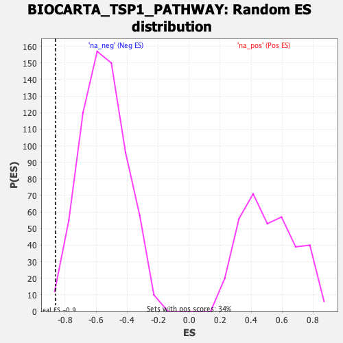

| | | Dataset | DE_genes |
| Phenotype | NoPhenotypeAvailable |
| Upregulated in class | na_neg |
| GeneSet | BIOCARTA_TSP1_PATHWAY |
| Enrichment Score (ES) | -0.86195296 |
| Normalized Enrichment Score (NES) | -1.5583316 |
| Nominal p-value | 0.0075987843 |
| FDR q-value | 0.09687124 |
| FWER p-Value | 0.719 |
Table: GSEA Results Summary
 Fig 1: Enrichment plot: BIOCARTA_TSP1_PATHWAY
Fig 1: Enrichment plot: BIOCARTA_TSP1_PATHWAY
Profile of the Running ES Score & Positions of GeneSet Members on the Rank Ordered List
| PROBE | GENE SYMBOL | GENE_TITLE | RANK IN GENE LIST | RANK METRIC SCORE | RUNNING ES | CORE ENRICHMENT | | 1 | THBS1 | | | 3585 | 0.093 | -0.2259 | No |
| 2 | MAPK14 | | | 4156 | 0.061 | -0.2588 | No |
| 3 | CASP3 | | | 7613 | -0.163 | -0.4719 | No |
| 4 | CD36 | | | 11790 | -0.761 | -0.6932 | No |
| 5 | FYN | | | 12960 | -1.064 | -0.7006 | Yes |
| 6 | JUN | | | 15456 | -4.705 | -0.5607 | Yes |
| 7 | FOS | | | 15471 | -8.771 | -0.0000 | Yes |
Table: GSEA details [plain text format]

Fig 2: BIOCARTA_TSP1_PATHWAY: Random ES distribution
Gene set null distribution of ES for BIOCARTA_TSP1_PATHWAY